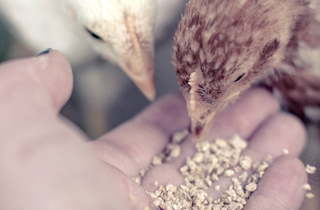

CJ더마켓이 건강하고 편리한
식생활을 만들어갑니다.
세계의 모든 식탁이,
K-Food로 즐거워집니다.
Green BIO 기술 혁신으로
세계인의 삶이 풍요로워집니다.
글로벌 지역사회와 함께
성장하는 세상을 만듭니다.
ABOUT
건강, 즐거움, 편리를 창조하는
글로벌 식품 / BIO 기업 CJ제일제당입니다.
식문화 브랜드
Brands
25

최초의 설탕 제조업으로부터 출발
History
1953

50년 이상 축적된 미생물 발효기술을바탕으로 개발한 핵산, 라이신, 트립토판,
발린 등 Global No.1 BIO 제품
Global-BIO